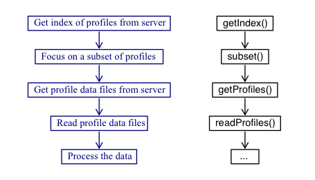

The argoFloats package provides tools for downloading and processing Argo profile data.
It allows users to focus on core argo, biogeochemical (bgc) argo, or deep argo profiles, and
also to sift these profiles based on ID, time, geography, variable, institution, and ocean.
Once downloaded, such datasets can be analysed within argoFloats or using other R tools
and packages.
The development website is https://github.com/ArgoCanada/argoFloats, and https://argocanada.github.io/argoFloats/index.html provides a simpler view that may be more helpful to most users.
The sketch given below illustrates the typical workflow with the package, with descriptions of the steps on the left, and names of the relevant functions on the right.

As illustrated, the central functions are named
getIndex(), subset(),
getProfiles(), and readProfiles(), and so a good way to
get familiar with the package is to read their documentation entries
and try the examples provided therein. Some built-in datasets are provided
for concreteness of illustration and for testing, but actual work always
starts with a call to getIndex() to download a full index of float data.
In addition to these functions, argoFloats also provides
specialized versions of R "generic" functions, as follows.
[[ provides a way to extract items from argoFloats objects,
without getting lost in the details of storage.
See [[,argoFloats-method for details.
(Note that [[<- is not specialized, since the
user is highly discouraged from altering values within argoFloats
objects.)
plot() provides simple ways to plot aspects of argoFloats objects.
See plot,argoFloats-method() for details.
summary() displays key features of argoFloats objects.
See summary,argoFloats-method() for details.
show() provides a one-line sketch of argoFloats objects.
See show,argoFloats-method() for details.
merge() combines multiple index objects into a new index object.
It should be noted that the profile elements within argoFloats objects are stored as
in the form of argo objects as defined by the oce package.
This means that argoFloats users can rely on
a wide variety of oce functions to analyse their data.
The full suite of R tools is also available, and the vastness of
that suite explains why argoFloats is written in R.